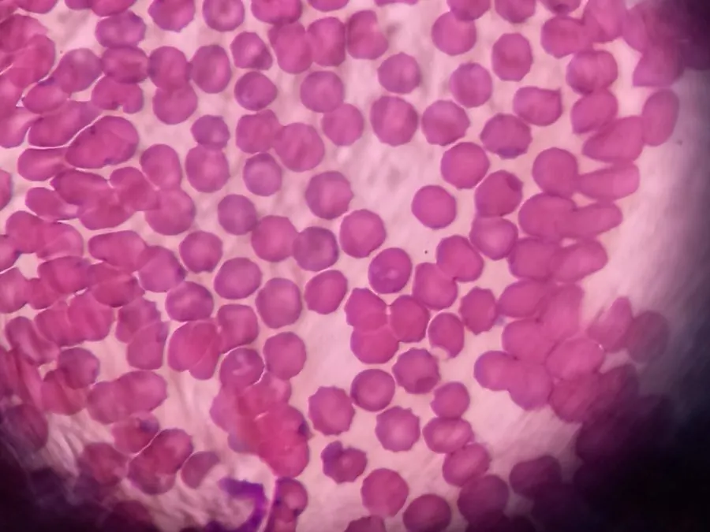

其他无脊椎动物 · 动物界
巴贝虫 Babesia microti

寄生于红细胞的原虫，经硬蜱叮咬传播，引起发热、贫血与溶血，是北美人类巴贝虫病的首要病原。
- 分类
- 门顶复门纲孢子纲目梨形虫目科巴贝虫科属巴贝虫属
- 栖息环境
- 红细胞内（虫体）；林区草丛与硬蜱体内（传播环节）
- 地理分布
- 美国东北部与中西部为主，欧洲、亚洲有近缘种
- 保护级别
- 病原原虫，无保护需求，属蜱媒传染病监测对象
物种志
巴贝虫是一种寄生于红细胞内的原虫，虫体微小，呈环形或梨形，长约二至三微米。它由硬蜱传播，在蜱体内完成部分发育，随蜱的唾液进入人体后侵入红细胞，在细胞内分裂繁殖，使红细胞破裂。它的形态与疟原虫相似，但不会在红细胞内产生色素，这是镜下鉴别的重要区别。
它的自然宿主是啮齿类，尤其是白足鼠，经肩突硬蜱叮咬传播，人因被感染的蜱叮咬而患病。潜伏期一至四周，症状包括高热、寒战、乏力、溶血性贫血和脾肿大，免疫力低下者可能重症。该病主要分布于美国东北部和中西部，欧洲和亚洲也有近缘种。防护措施包括在林区穿长袖衣裤、使用驱蜱剂、离开后检查身体并及时清除附着的蜱。
形态与习性
- 虫体大小约二至三微米，环状或梨形
- 寄生部位红细胞内，繁殖后使红细胞破裂
- 传播媒介肩突硬蜱等硬蜱
- 自然宿主白足鼠等啮齿类
- 症状高热、寒战、溶血性贫血、脾肿大
- 防护穿长袖、用驱蜱剂、及时除蜱
趣味知识
- 它和疟原虫长得很像，但红细胞里找不到色素颗粒，这是分辨的窍门。
- 蜱要附着一天以上才容易传播，及时洗澡检查身体很关键。
- 免疫力低下的人感染后可能重症，输血也可能成为传播途径。